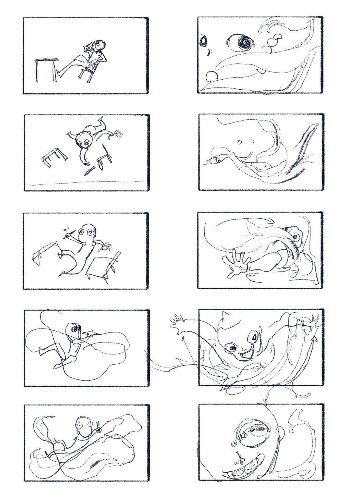
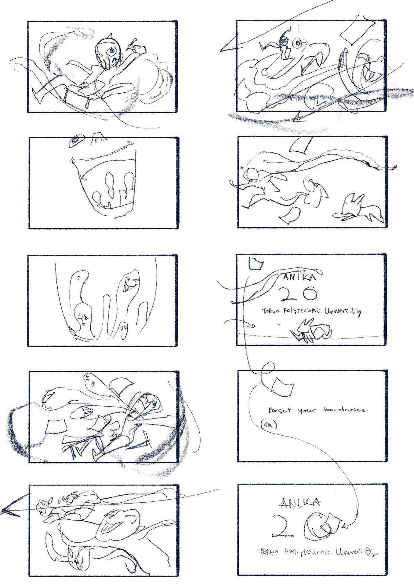
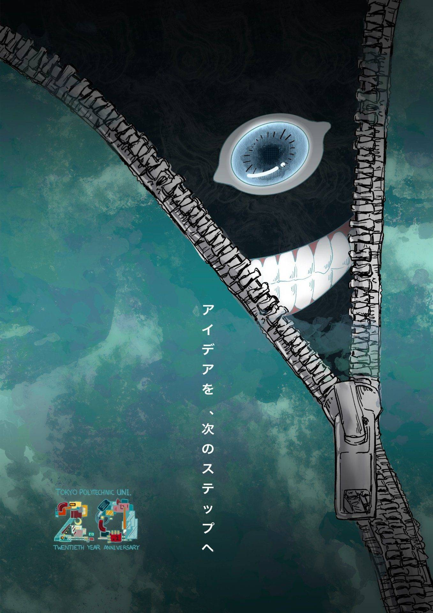
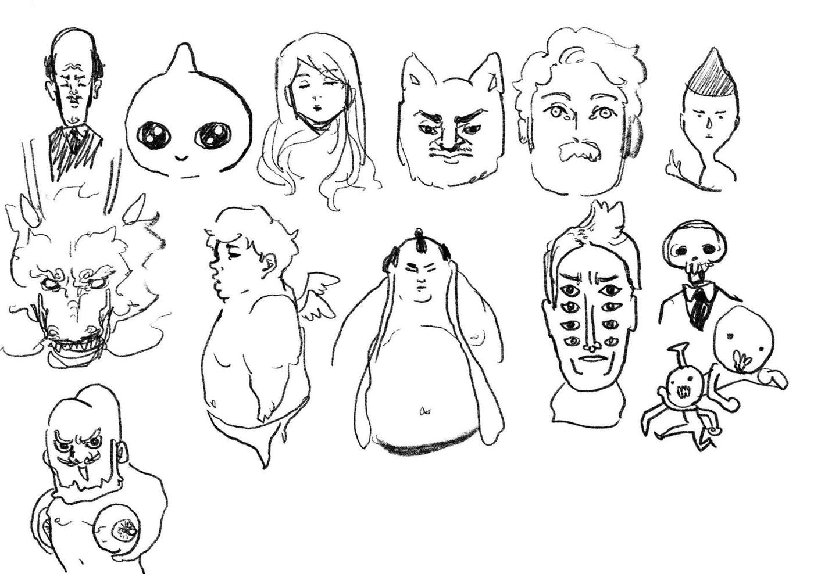
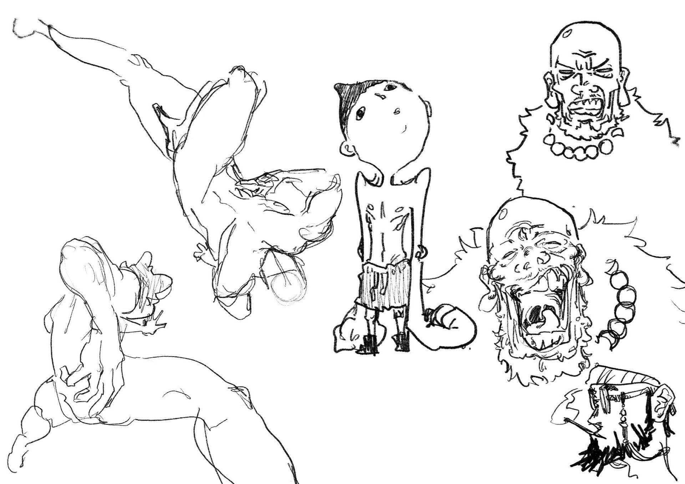
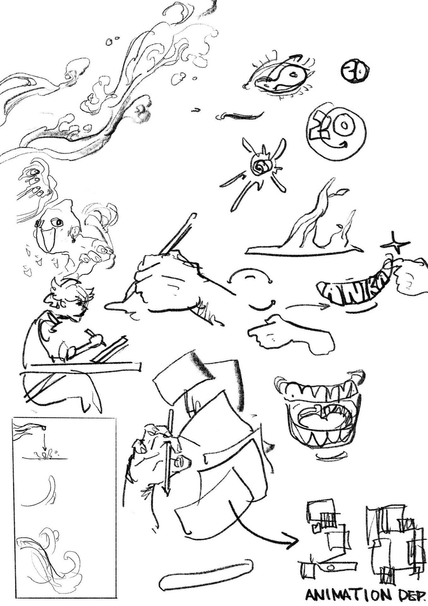
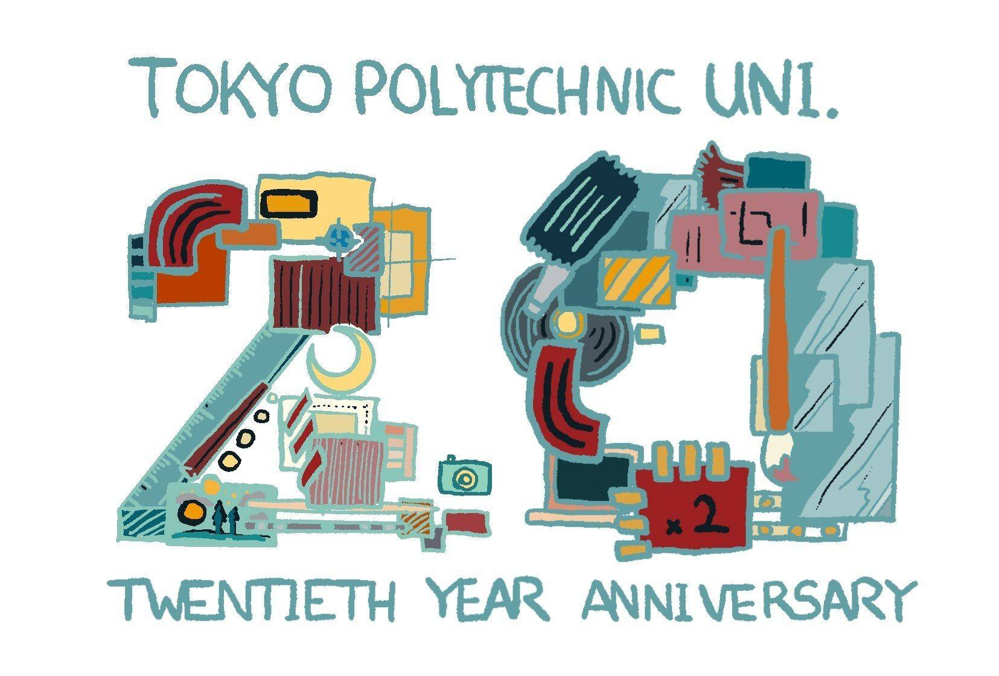
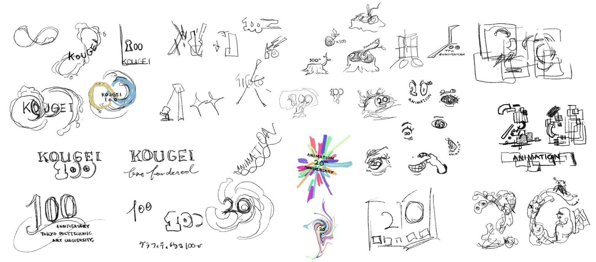

Animation / research class project
Animation Department 20th Anniversary CM
This project was created in my research class in 2025 for the 20th anniversary of the animation department at Tokyo Polytechnic University. I began with logo designs that looked for ways to represent animation through the number 20, then developed those ideas into a short 30-second promotional film.
From the storyboard to the final animation, the visual work was created in Procreate. The audio was produced separately in Logic Pro, and the piece was designed as a compact celebratory CM that could communicate the department’s energy, imagination, and sense of play in a very short time frame.
- Role: Concept, story, animation, sound direction
- Software: Procreate, Logic Pro
- Format: 30-second CM
- Year: 2025
Storyboard
Planning the 30-second structure
The CM began with quick board sketches that blocked out the boy, the desk, the pencil, and the wave-like motion that transforms the space.


Concept poster
Visual direction
This poster established the tone of the project and connected the anniversary identity to the more surreal imagery used in the film.

Character design
Exploring cast and motifs
These sheets test the CM’s playful cast of figures, graphic faces, and surreal forms before they were simplified into the final piece.



Final logo
Anniversary identity
The finished logo distills the project into a celebratory mark for Tokyo Polytechnic University’s animation department anniversary.

Final piece
Completed CM and thumbnail
The finished 30-second film was animated in Procreate, with the audio produced in Logic Pro and the final version published online for the department.

Rough logo ideas
Research and early identity sketches
The design process started with many possible readings of “20,” using eyes, frames, motion lines, paper, and animation symbols to test what could best represent the department.

Layout concept video
Composited rough concept
This rough composite brings together the layouts and motion ideas as an early proof of concept before the final polish.